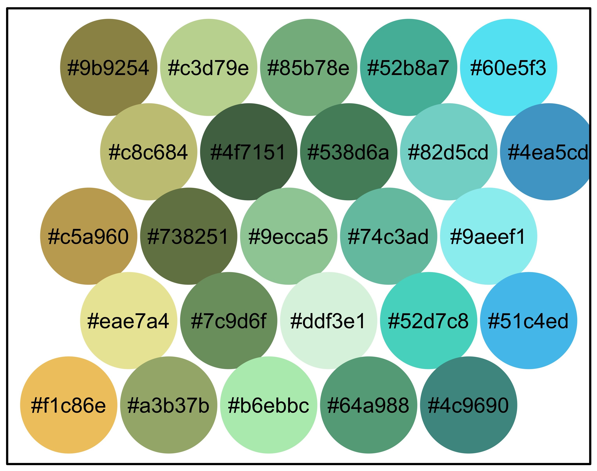
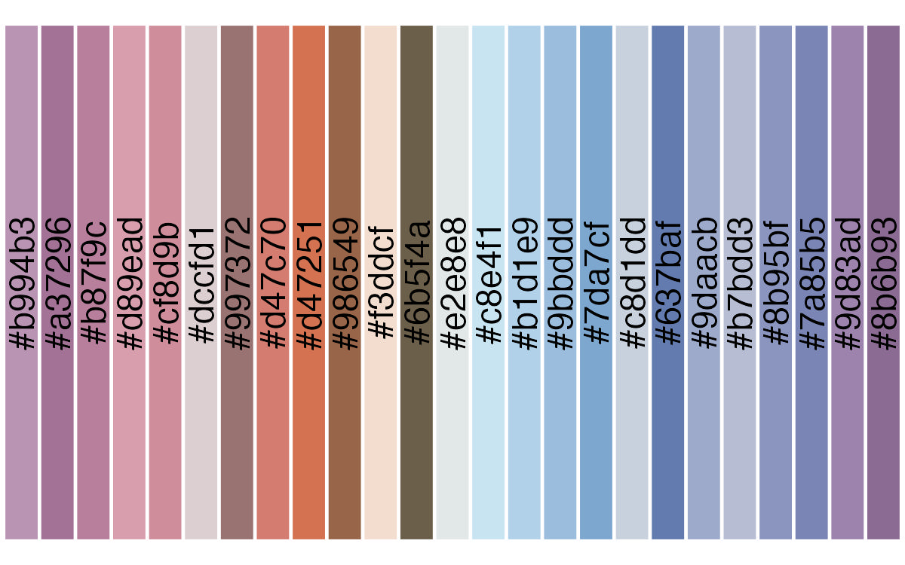
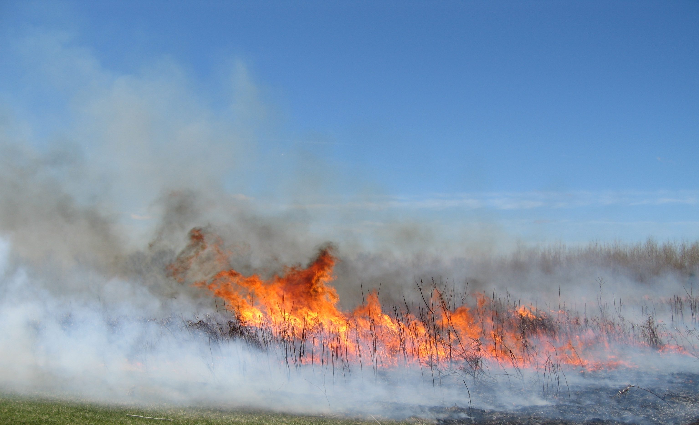

The goal of lterpalettefinder is to provide high quality color palettes derived from photos at Long Term Ecological Research (LTER) sites. This allows users to create beautiful graphics that have close visual ties to photos from the places where data were collected. This package also allows users to generate their own palettes from any photo (PNG, JPEG, TIFF, or HEIC) if the current palettes in the function do not meet their needs. For more information on the LTER Network, check out our website!
Installation
You can install the development version of lterpalettefinder from GitHub with:
# install.packages("devtools")
devtools::install_github("lter/lterpalettefinder")R Shiny App
To help demonstrate some of the functionalities of lterpalettefinder we have created a standalone R Shiny app that allows for extracting a palette and demonstrating it entirely through a browser. While we developed this app primarily to support non-R users interested in lterpalettefinder we hope it is interesting and valuable to R experts as well! The GitHub repo for the Shiny app can be found here.
Functions
This package currently includes the following functions:
Use an Existing Palette
-
palette_findreturns “official” palette(s) that we have already created that meet criteria you specify
Create Your Own Palette
palette_extractextracts 25 colors’ hexadecimal codes from a picture of your choosing (PNG, JPEG, TIFF, and HEIC formats are currently supported)palette_sortsorts output ofpalette_extractby hue and saturation to approximate how human eyes group colorspalette_subsamplerandomly picks a user-specified number of hexadecimal codes from a vector of such codes
Demonstrate a Palette
palette_democreates an exploratory base R graph from a vector of hexadecimal codes (like that returned by eitherpalette_extract,..._sort, or..._subsample) and provides an option to export that plot if desiredpalette_ggdemocreates an exploratoryggplot2graph from a vector of hexadecimal codes (like that returned by eitherpalette_extract,..._sort, or..._subsample)
Note that the vector of hexadecimal codes provided by palette_find when only one official palette meets criteria set by user will also be accepted by either palette_demo or ...ggdemo
Acknowledgements
Creation of this package was funded by National Science Foundation grant #1929393 awarded to F. Davis, J. Caselle, and M. Downs.
Gabriel De La Rosa designed our hex logo and provided valuable feedback on early versions of the package.
Thanks also to the whole LTER Network Office team and the broader NCEAS community!
Palette Examples
These palette examples were generated from photos at LTER sites.
Santa Barbara Coastal LTER + palette_demo
| Image | Palette |
|---|---|
 |
 |
Arctic LTER + palette_ggdemo
| Image | Palette |
|---|---|
 |
 |
Kellogg Biological Station LTER + palette_demo
| Image | Palette |
|---|---|
|  |  |